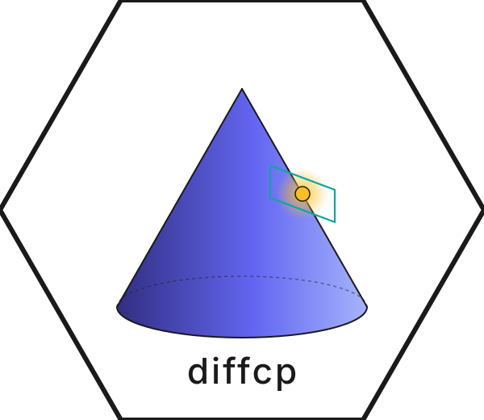

Differentiating Through a Cone Program with diffcp
Source:vignettes/diffcp.Rmd
diffcp.Rmddiffcp solves a convex cone program
and returns both the optimum (with the dual variable of the cone constraint) and an abstract linear map representing the derivative of with respect to the data . The derivative is exposed as two callables:
-
D(dA, db, dc)— the forward derivative; returns(dx, dy, ds). -
DT(dx, dy, ds)— the adjoint; returns(dA, db, dc).
This vignette walks through three small examples that exercise the common cones and demonstrate both the forward solve and the derivative.
A linear program
The simplest case: a 1-equality / non-negative orthant LP.
In SCS-style standard form , :
A <- sparseMatrix(i = c(1, 2, 1, 3, 1, 4),
j = c(1, 1, 2, 2, 3, 3),
x = c(1, -1, 1, -1, 1, -1),
dims = c(4, 3))
b <- c(1, 0, 0, 0)
c <- c(1, 2, 3)
cone_dict <- list(z = 1L, l = 3L)Solve:
res <- solve_and_derivative(A, b, c, cone_dict, mode = "lsqr",
tol_gap_abs = 1e-10,
tol_gap_rel = 1e-10,
tol_feas = 1e-10)
res$x
#> [1] 1.000000e+00 1.562233e-11 5.329854e-12As expected the optimum is at (the cheapest non-zero coordinate). Now apply the derivative at a small perturbation in :
dA <- sparseMatrix(i = integer(0), j = integer(0), x = numeric(0),
dims = c(4, 3))
db <- numeric(4)
dc <- c(0.001, 0, 0)
d <- res$D(dA, db, dc)
d$dx
#> [1] -2.274114e-16 -6.059404e-16 4.396755e-15This should agree with finite-differencing the perturbed solve:
res_pert <- solve_only(A, b, c + dc, cone_dict,
tol_gap_abs = 1e-10,
tol_gap_rel = 1e-10,
tol_feas = 1e-10)
max(abs(d$dx - (res_pert$x - res$x)))
#> [1] 1.453855e-14A second-order cone program
Minimum-distance-to-the-simplex inside a Lorentz cone:
Variables: . Standard form with one zero cone (the equality) and one SOC of size 4 (containing the block):
A <- sparseMatrix(
i = c(2, 1, 3, 1, 4, 1, 5),
j = c(1, 2, 2, 3, 3, 4, 4),
x = c(-1, 1, -1, 1, -1, 1, -1),
dims = c(5, 4))
b <- c(1, 0, 0, 0, 0)
c <- c(1, 0, 0, 0)
cone_dict <- list(z = 1L, q = 4L)
res <- solve_and_derivative(A, b, c, cone_dict, mode = "dense",
tol_gap_abs = 1e-10,
tol_gap_rel = 1e-10,
tol_feas = 1e-10)
res$x
#> [1] 0.5773503 0.3333333 0.3333333 0.3333333The optimum has and , achieving the SOC equality constraint .
A semidefinite program
Minimum-eigenvalue of a 5×5 PSD matrix subject to unit trace. Since
PSD vectorisation in SCS / diffcp follows lower-triangular
column-major order with sqrt(2) scaling on the
off-diagonals, we build the trace-coefficient row by hand:
DIM <- 5L
n <- DIM * (DIM + 1L) %/% 2L # 15
trace_row <- numeric(n)
pos <- 1L
for (col in seq_len(DIM)) {
trace_row[pos] <- 1.0
pos <- pos + (DIM - col + 1L) # advance to next diagonal entry
}
A <- rbind(
Matrix(matrix(trace_row, nrow = 1L), sparse = TRUE),
-Diagonal(n))
A <- as(A, "CsparseMatrix")
b <- c(1.0, numeric(n))
C <- matrix(0, DIM, DIM)
C[1, 1] <- 1; C[DIM, DIM] <- -1
c_vec <- vec_symm(C)
cone_dict <- list(z = 1L, s = DIM)
res <- solve_only(A, b, c_vec, cone_dict,
tol_gap_abs = 1e-10,
tol_gap_rel = 1e-10,
tol_feas = 1e-10)
X <- unvec_symm(res$x, DIM)
sum(diag(X))
#> [1] 1
range(eigen(X, symmetric = TRUE, only.values = TRUE)$values)
#> [1] -2.080584e-12 1.000000e+00The optimal has trace 1 and concentrates on the eigenvector of with the most-negative eigenvalue, so .
Choosing the derivative mode
solve_and_derivative accepts two modes:
-
mode = "lsqr"(default): matrix-free conjugate-gradient style iterative solve against theMoperator. Memory-efficient and appropriate for large sparse problems. -
mode = "dense": buildMas a dense matrix and factor with Eigen’s LDLT. Lower per-call cost when the problem is small or the derivative is being applied many times to different perturbations.
Both modes produce the same numeric answer to within solver
tolerance; the dense path matches Python’s
(M^\top M).\text{ldlt}().\text{solve}(M^\top \cdot \text{rhs})
bit for bit, and the LSQR path agrees with the dense path to roughly
1e-6 (LSQR’s default atol = btol = 1e-8).